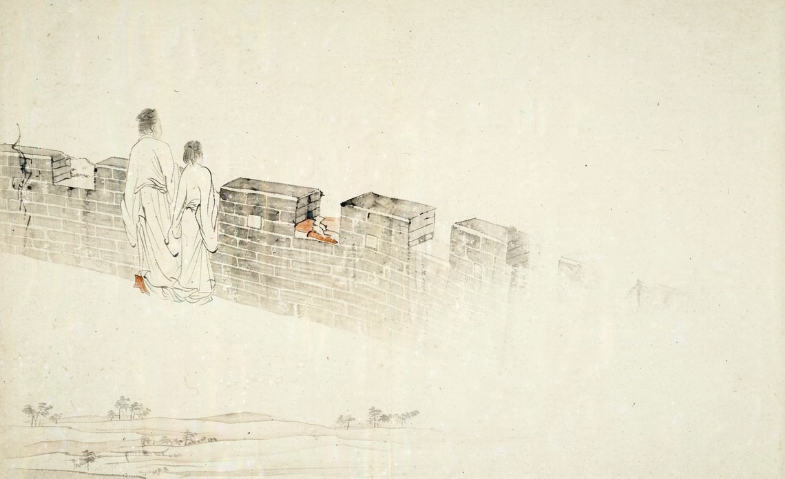
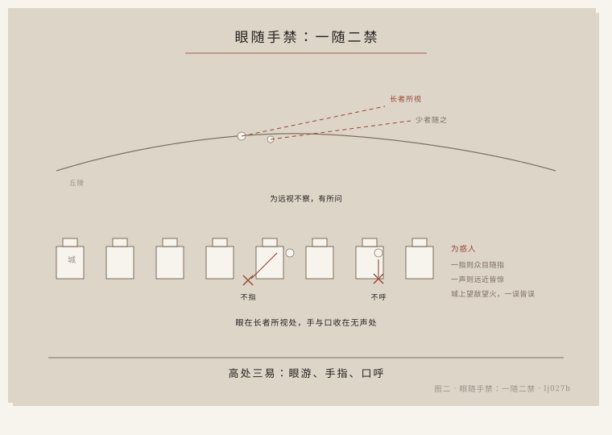

曲礼上 · 一·二十八 · 第 27 课
这一节讲在高处：跟长者上丘陵，眼要随长者所看；登上城墙不随手乱指，在城上不大声呼喊。
说什么事：从长者而上丘陵，则必乡长者所视；登城不指，城上不呼。
落在哪一层：教。上节在平地路上，这节登上高处——地一高，眼与口都容易放肆。
为何编在此位：一·二十七讲随行，此节讲随行到高处；同是「从」，一处看脚，一处看眼。
【经】從長者而上丘陵，則必鄉長者所視。登城不指，城上不呼。
乡长者所视 郑注：「为远视不察有所问。」——上到高处，长者必有远望；你眼不随他，他一旦有问，你答不上。
不指 郑注：「为惑人。」——手指一伸，众人跟着看，指错即导错。
不呼 郑注：「为惑人。」疏：「呼，号叫也。」
视随的实法 疏：「长者东视则东视，长者西视则西视，从先生君子亦然。」
跟着长者登上丘陵，一定要朝长者所看的方向看。登上城墙不可随意指点，在城上不可高声呼喊。
一句「随视」，两句「禁口手」。高处使人心易放：眼要放远，故不许自作主张看别处；手要指，口要喊，故先禁住。礼在高处，管的是视野与声音。
第一层 随视不是跟风，是备问 郑注一句实在：「为远视不察有所问。」——上高处是为了看远，长者看远必有所见，也必有所问。你眼若在他处，他一问，你只能哑。所以随视是「预备回答」，不是陪看风景。
第二层 「不指」禁的是「代长者指」 城上人多，一指则众目随指而动。指错一处，众人便错看一处；这在城上不是小事：望敌、望火、望行人，一指之差，众人皆误。故注只说两字「惑人」。
第三层 「不呼」禁的是「以声乱众」 呼与指同罪，理由也是「惑人」。城上本是警备之地，一声号叫，远近皆惊，以为有变。
第四层 一条通则：高处是三样失礼最易犯的地方 眼易游、手易指、口易呼。礼在此不是管风景，是管「公共视野」。今日的公共场合——天台、讲台、直播镜头——同理：你指一下、喊一声，别人的注意力就被你牵走了。
与今日何干 今日看展、看景、看热闹，人人举指、处处呼叫。此节给的规矩很旧也很新：与长辈同看，眼随他；在公共高处，手不指、口不呼。所省者不是兴致，是别人的误判。
| 左 | 右 |
|---|---|
| 从长者而上丘陵 | 为远视不察有所问 |
| 必乡长者所视 | 长者东视则东视，西视则西视 |
| 登城不指 | 为惑人 |
| 城上不呼 | 为惑人 |

